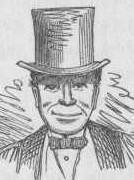

picture courtesy of "Mark Twain in His Times"
Mark Twain at Home
"If
you attempt to create and build a wholly imaginary incident, adventure,
or situation, you will go astray, & the artificiality of the thing
will be
detectable. But if you found it on a fact in your personal experience, it is an acorn, a root, & every created adornment that grows up out of it &
spreads its foliage & blossoms to the sun will seem realities, not inventions. You will not be likely to go astray; your compass of fact is there to
keep you on the right course." Samuel Clemens, November 1887 journal entry, as quoted in Mark Twain's Notebooks and Journals, Vol. III
detectable. But if you found it on a fact in your personal experience, it is an acorn, a root, & every created adornment that grows up out of it &
spreads its foliage & blossoms to the sun will seem realities, not inventions. You will not be likely to go astray; your compass of fact is there to
keep you on the right course." Samuel Clemens, November 1887 journal entry, as quoted in Mark Twain's Notebooks and Journals, Vol. III



Ferguson's Guide to
Navigating This Site
Sources Further Information
back to main page